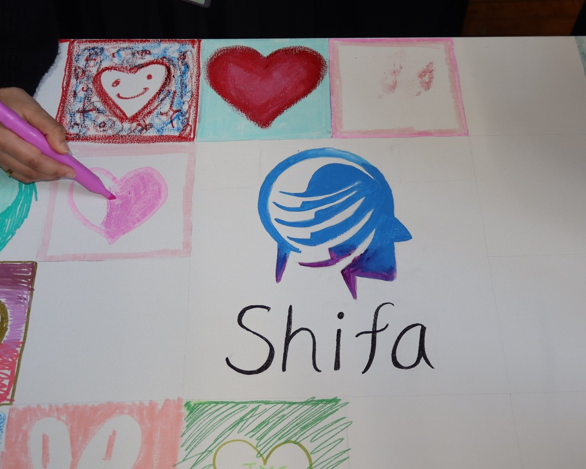

The Shifa Institute
The Shifa Institute
Destigmatizing mental health in the Muslim community
The Shifa Institute is a registered 501(c)(3) non-profit organization that provides Muslim Americans and other minorities with education, references, and resources for mental health.

We work to destigmatize mental health in the Muslim community through workshops, educational resources, and Islamically grounded leadership programs.
We aim to take a multifaceted approach, supporting research and a psychological perspective on mental health while also maintaining a spiritual identity and philosophy.
Our goal is to encourage the conversation of mental health within our community while breaking down the stigmas that many hold against it.
Our mission and historyStudent chapters


Quick facts and statistics
Muslim American mental health is severely under-researched. Here are some quick statistics to help start the conversation.
In a research study, Muslim American adults were 2 times more likely to report a history of suicide attempts compared with respondents from other faiths.
Muslim Americans face unique risk factors that might affect the prevalence of certain mental health disorders and treatment utilization. These factors include marginalization and challenges with cultural assimilation, alongside discrimination such as racism, xenophobia, and Islamophobia.
Source: American Journal of Public Health, 2018Although the Islamic religion teaches Muslims to maintain their mental health, Muslims tend to underuse mental health services because of cultural beliefs, stigma, and lack of knowledge about those services.
Source: Tanhan and Young, Journal of Religion and Health, 2021It can be hard to find support, so we're here to help.
Below are some national resources.
- muslimtherapist.directoryMuslim communityA directory of licensed Muslim mental health professionals.
- maristan.orgMuslim communityMental health tools, articles, and educational materials for Muslim communities, with a spiritually integrated approach to care.
- khalilcenter.comMuslim communityIndividual therapy, workshops, and professional training that combine Islamic spirituality and psychology.
- inclusivetherapists.comAll communitiesA nationwide directory of BIPOC, LGBTQ+, and neurodivergent therapists, with filters for cultural, spiritual, and language needs.
Press coverage
The Shifa Institute spreads mental health awareness across college campuses
Nargis Rahman, August 27, 2025The Shifa Institute hosts Islamic psychoeducation workshops across community centers and college campuses as students return to school.
Read the story on wdet.org UM-Dearborn NewsCAPS' peer wellness program is changing with the times
Read the story on umdearborn.eduDonating helps support us to help support you!
We rely on donations in order to maintain our operations.